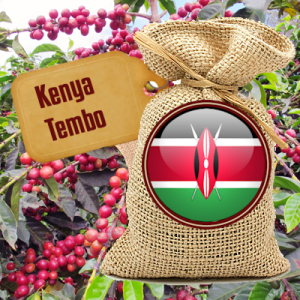

Kenya Tembo Coffee

- Kenya Tembo is big, bold and bright.
- It has a rich buttery body that holds up well to the powerful, bright acidity.
- It has distinctive cedar aromatics with a sharp grapefruit like citric acidity and currant fruitiness with notes of caramel.
- Crisp and complex with a balanced aftertaste.
- It’s a wonderful coffee and easily meets the elevated standard for which Kenyan coffees are famous.